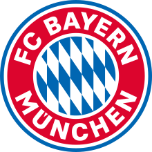

Bayern Munich

Fußball-Club Bayern München e.V., FCB, Bayern Munich, or FC Bayern, is a German sports club based in Munich, Bavaria (Bayern). It is best known for its professional football team, which plays in the Bundesliga, the top tier of the German football league system, and is the most successful club in German football history, having won a record 27 national titles and 18 national cups.
FC Bayern was founded in 1900 by 11 football players, led by Franz John. Although Bayern won its first national championship in 1932, the club was not selected for the Bundesliga at its inception in 1963.[7] The club had its period of greatest success in the middle of the 1970s when, under the captaincy of Franz Beckenbauer, it won the European Cup three times in a row (1974–1976). Overall, Bayern has reached ten European Cup/UEFA Champions League finals, most recently winning their fifth title in 2013 as part of a continental treble. Bayern has also won one UEFA Cup, one European Cup Winners' Cup, one UEFA Super Cup, one FIFA Club World Cup and two Intercontinental Cups, making it one of the most successful European clubs internationally and the only German club to have won both international titles. Since the formation of the Bundesliga, Bayern has been the dominant club in German football with 27 titles and has won 9 of the last 13 titles. They have traditional local rivalries with 1860 Munich and 1. FC Nürnberg, as well as with Borussia Dortmund since the mid-1990s.